I see this meme pop up occasionally, and have yet to see a good explanation for why it’s false. Here’s my attempt, which builds on everything that has dissatisfied me about the explanations I’ve seen so far. You can find the code that I used to generate visualizations here.
Approximating a circle
If you follow the method suggested in the graphic, you will indeed see the “square with corners removed” appear to converge to a circle. To make calculations easier, we’ll approximate a circle of radius 1 with its center at the origin. We begin with a square of side length 2:
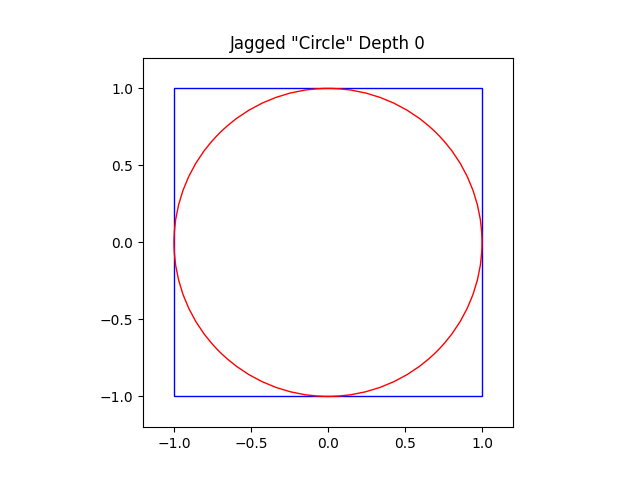
We take each corner of the square and fold it onto the circle. This keeps overall perimeter the same while creating a new square with corners removed, as shown in the graphic. Yet in the process of “removing” the corners, we’ve actually created eight new corners.
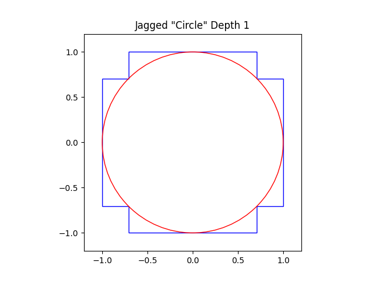
Repeating the “folding” procedure with the new corners:
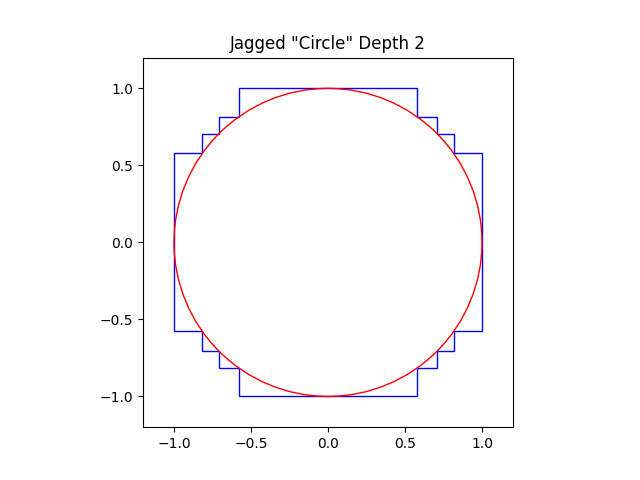
After 15 steps:
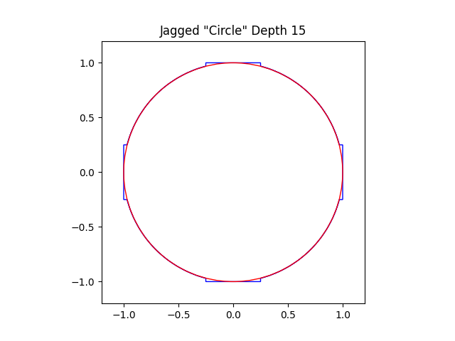
At each step, the new corners created by the folding procedure are “closer” to the circle than the original points. It seems like we should be able to continue this procedure indefinitely, the perimeter unchanging as the distance between the new corners and the circle converges to zero, and arrive at a miraculous circle with diameter 2 and perimeter 8.
Why it doesn’t work
A key property of circles is that they’re composed of a single “smooth” curve. But no matter how far we go in this process, the “circle” we’ve constructed will always have corners. In the images above, some segments almost appear smooth, but if you zoom in far enough, you’ll see that they’re actually hiding a bunch of “extra perimeter” in little zig-zags, just like a coastline reveals more length the more finely you measure it.
So maybe we should just conclude that you can never approximate a circle using a shape composed of straight lines. This would be an inconvenient conclusion, since that’s exactly the method that the Greeks used to accurately approximate pi for centuries.
The Greek method
The more sides that you add to a regular polygon, the more it looks like a circle. Four sides:
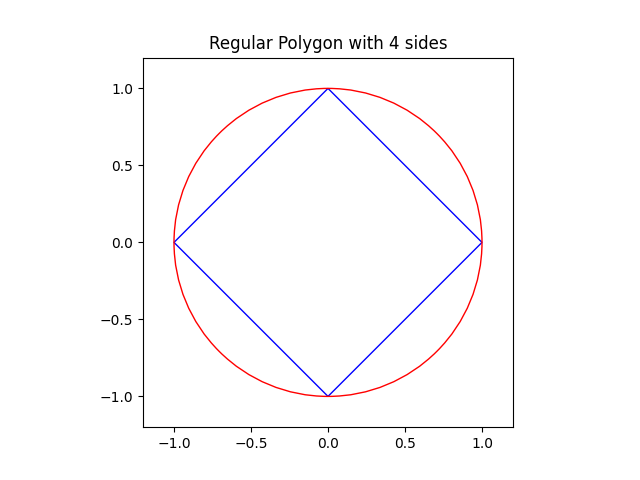
Ten sides:
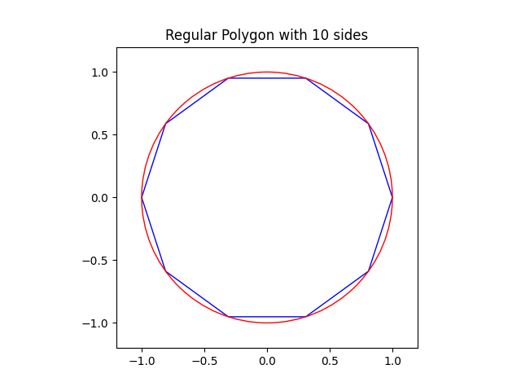
Twenty sides:
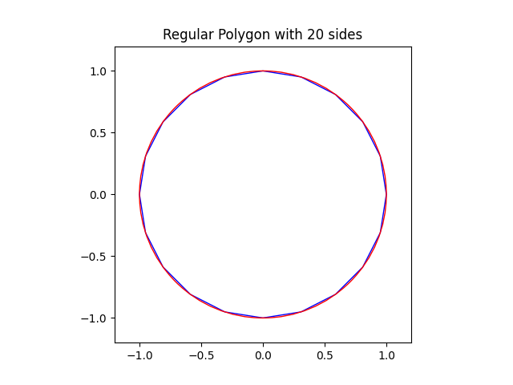
If you follow this process, the perimeter will change at every step, eventually converging to the expected value of 2*pi. But what makes this method of approximating a circle with straight lines different from the one in the meme?
What is “smooth”, anyway?
Suppose I gave you a straightedge and asked you to measure this curve:
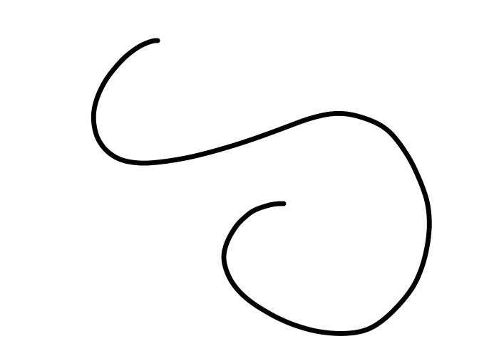
You’d probably break the curve up into a bunch of straight segments and measure the length of each one. The smaller the segments, the more your closely you’d approximate the shape of the curve, and the more accurate your measurement would be.
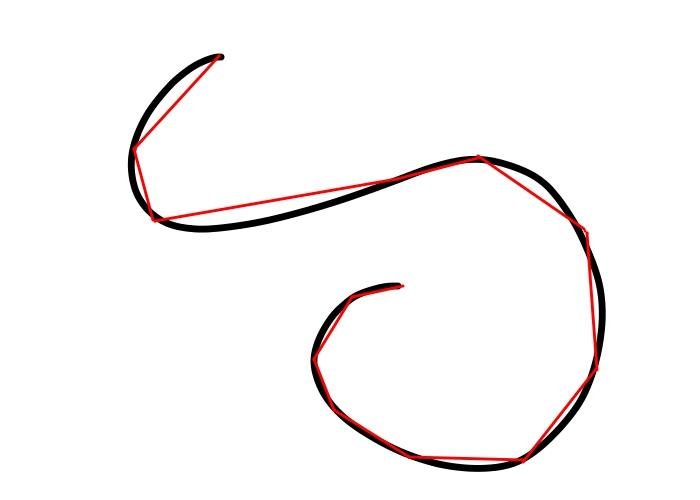
It would not occur to you to instead alternate between holding the straightedge vertically and horizontally, measuring the length of the curve in a series of zig-zags. But why not? If the zig-zags were small enough, they would also appear to approximate the curve.
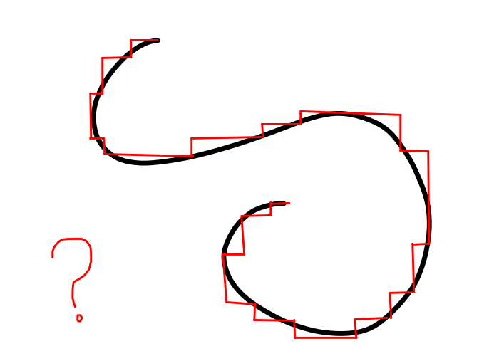
The first method is what the Greeks had in mind when they approximated the circle with a regular polygon. It’s also the basis for measuring the length of curves in calculus.
Each point on a curve can be approximated by a straight line tangent to the curve at that point, in the sense that, if you zoom in closely around that point, the curve appears almost “flat” in a way that coincides with the tangent line:
As the length of the segments that we use to calculate the perimeter of the curve approaches zero, the individual segments also start to coincide more closely with tangent lines. That’s one way of defining what it means for a curve to be “smooth”.
At every individual step in the Greek method, the polygon will have corners, but the shape is getting “smoother” in the sense that the segments comprising the perimeter are getting closer to the tangent lines of the circle. The method in the meme, on the other hand, will create zig-zagged contours that never get “smoother” in this sense, no matter how many steps you take.
Why I wrote this
I saw many attempts at explanation that stopped at the first “why it doesn’t work” explanation. Someone unfamiliar with the Greek method may have been satisfied with this answer and thus departed with damaged intuition about the feasibility of approximating curves with lines.
Other explanations invoked the phrases of “derivatives” and “arc length” without explaining how those notions came about. This is the method by which I learned math in school too: math words as incantations to invoke to make teachers leave you alone. Limit, cosine, function. I just wanted to doodle comics at my desk, but they wouldn’t let me do that unless I recited the correct formulas first.
But “math words as incantations” isn’t too far off from how the Greeks conceived of math either. Leaving aside the influence of Pythagorean mystics, literal worshippers of numbers, on Classical Greek philosophy, deductive proof-based mathematics served more of a cultural than practical role for educated Greeks.
The Egyptians were happy to use an empirical estimate of pi that was incorrect past the first decimal place, and reference fractional representations from tables instead of disseminating simpler methods to represent and independently calculate fractions. Empirical approximation and reference tables is all that’s required for construction and manufacturing before the invention of high-precision machining techniques. So why did the Greeks bother with rigorous mathematics if they didn’t expect it to have practical application?
Morris Kline offers the following explanation in Mathematical Thought from Ancient to Modern Times:
Why did the Greeks insist on deductive proof? Since induction, observation, and experimentation were and still are vital sources of knowledge heavily and advantageously employed by the sciences, why did the Greeks prefer in mathematics deductive reasoning to the exclusion of all other methods? We know that the Greeks, the philosophical geometers as they were called, liked reasoning and speculation, as evidenced by their great contributions to philosophy, logic, and theoretical science. Moreover, philosophers are interested in obtaining truths. Whereas induction, experimentation, and generalizations based on experience yield only probable knowledge, deduction gives absolutely certain results if the premises are correct. Mathematics in the classical Greek world was part of the body of truths philosophers sought and accordingly had to be deductive.
Still another reason for the Greek preference for deduction may be found in the contempt shown by the educated class of the classical Greek period toward practical affairs. Though Athens was a commercial center, business as well as such professions as medicine were carried on by the slave class. Plato contended that the engagement of freemen in trade should be punished as a crime, and Aristotle said that in the perfect state no citizen (as opposed to slaves) should practice any mechanical art. To thinkers in such a society, experimentation and observation would be alien. Hence no results, scientific or mathematical would be derived from such sources.
The lack of practical application was the point– this was what distinguished the educated, aristocratic pursuit of mathematics from the quotidian calculations of laborers. Even today, there’s a certain status accorded to “pure” over “applied” mathematics– just ask any university math major what they think of the introductory linear algebra course tailored to engineering students vs their own introductory linear algebra course.
It’s difficult to explain proofs to laymen from such a perspective. One failure mode is over-reliance on abstract phrases like “derivative” that the layman will struggle to connect to the actual image in front of them. Taxing the reader’s attention with overly-rigorous detail is another failure of explanation– inserting a block of equations establishes that you are doing the prestigious work of Real Math, but no layman will be as excited to read it as you were to write it. The most egregious failure is over-simplifying to the point that the reader draws false conclusions based on the explanation’s most intuitive interpretation.
The best explanations are grounded in the concrete: visual examples, descriptions of the process by which results were historically derived. It’s more efficient to refer to mathematical abstractions like “derivative”, and more glamorous since it signals to interested parties (school teachers, Greek aristocrats, fellow posters on r/mathematics) that you are a mathematician. And it’s easier to say something simple that only falls apart under scrutiny that whoever you’re giving the explanation to probably won’t apply. But with some intellectual effort and willingness to incorporate the usual features of “good writing” (individual authorial voice, humor, cool facts about ancient Greece), your explanation will hopefully end up as something not just edifying for laymen, but entertaining for other mathematicians to read.
After all, the ancient Greek decision to tie social status to the ability to produce deductive proof has major advantages over other status signals. A genuine Rolex is expensive and easily confused with a sophisticated fake, but anyone willing to put in the mental effort can construct or verify a deductive proof. And then you can write a blog post about it.
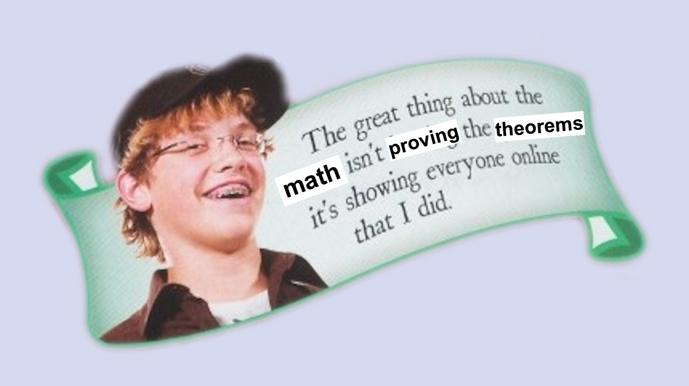